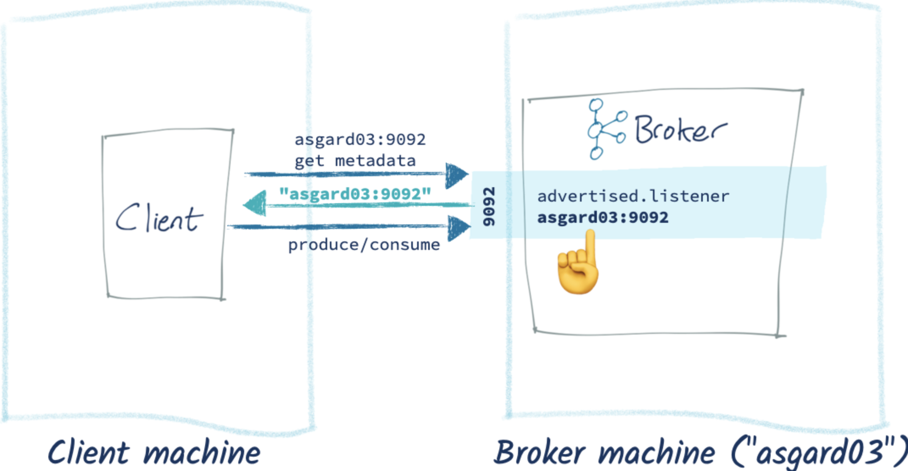

前言
整理一下前陣子學習架 kafka 機器的步驟。
正文
使用 GCE 在裡面安裝 kafka
1. 安裝 JAVA
1 | $ sudo apt-get update |
2. kafka 下載
1 | $ mkdir ~/Downloads |
3. 設定 server.properties
進入 server.properties$ nano ~/kafka/config/server.properties
1 | // 在裡面增加 |
4. CREATE UNIT FILE
進入 zookeeper.service
$ sudo nano /etc/systemd/system/zookeeper.service設定新增以下
1
2
3
4
5
6
7
8
9
10
11
12
13[Unit]
Requires=network.target remote-fs.target
After=network.target remote-fs.target
[Service]
Type=simple
User=kafka
ExecStart=/home/kafka/kafka/bin/zookeeper-server-start.sh /home/kafka/kafka/config/zookeeper.properties
ExecStop=/home/kafka/kafka/bin/zookeeper-server-stop.sh
Restart=on-abnormal
[Install]
WantedBy=multi-user.target
進入 kafka.service
$ sudo nano /etc/systemd/system/kafka.service設定新增以下
1
2
3
4
5
6
7
8
9
10
11
12
13[Unit]
Requires=zookeeper.service
After=zookeeper.service
[Service]
Type=simple
User=kafka
ExecStart=/bin/sh -c '/home/kafka/kafka/bin/kafka-server-start.sh /home/kafka/kafka/config/server.properties > /home/kafka/kafka/kafka.log 2>&1'
ExecStop=/home/kafka/kafka/bin/kafka-server-stop.sh
Restart=on-abnormal
[Install]
WantedBy=multi-user.target
5. 啟動 kafka
1 | $ sudo systemctl start kafka |
6. 操作 kafka topic
用 kafka 帳號才可以創建
創建 topic
`$ ~/kafka/bin/kafka-topics.sh --create --bootstrap-server localhost:9092 --replication-factor 1 --partitions 1 --topic TutorialTopic`
7. 操作 kafka producer
producer 寫入資料$ echo "Hello, World" | ~/kafka/bin/kafka-console-producer.sh --broker-list localhost:9092 --topic TutorialTopic > /dev/null
8. 操作 kafka consumer
consumer 端啟動，開始接收訊息$ ~/kafka/bin/kafka-console-consumer.sh --bootstrap-server localhost:9092 --topic TutorialTopic --from-beginning
9. 測試 again
- producer 寫入資料 again
$ echo "Hello World from Sammy at DigitalOcean!" | ~/kafka/bin/kafka-console-producer.sh --broker-list localhost:9092 --topic TutorialTopic > /dev/null - consumer 端會接收到訊息
用程式語言連接不到 kafka???? 如何解決
進入 server.properties 修改設定
1 | //原本是這樣的設定 |
這樣設定之後，Broker 就可以告訴 client 正確連接 kafka 的位置了。
流程圖長這樣：

心得
這一路上研究，每個步驟都碰壁不少，在更了解 MQ 的路上繼續努力～